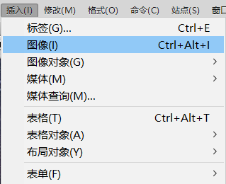
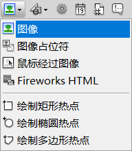

| 7.图像标记 |
格式：<img src="图像地址" align=“对齐方式” width="宽度" heigh=“高度” alt=“替换文字” border=“边框宽度”> |
说明： |
| 1. 在页面中插入一幅图像，图像地址可以是本地计算机上的文件，也可以是一个URL地址，但图像必须是GIF、JPG/JPEG或PNG格式的，其他格式的图像不能被插入到网页中。 |
| 2. alt参数用于设置图像的说明信息，当浏览器不能显示图像时，则用该参数指定的文本替换特定的图片。 若正常显示，则鼠标指向该图片时也会显示文字。 |
| 例如： |
此代码为:<img src="image/cygs.jpg" width="780" height="443" alt="风景图片"> |
| 图像插入的方法： |
1.选择“插入→图像”菜单命令。  |
2.单击“插入面板”“常用”类别中的“图像”按钮。  |
| 3.按Ctrl+Alt+I组合键。 |
©版权所有 违者必究 版权所有者：李翱翔 |
| 返回首页 |